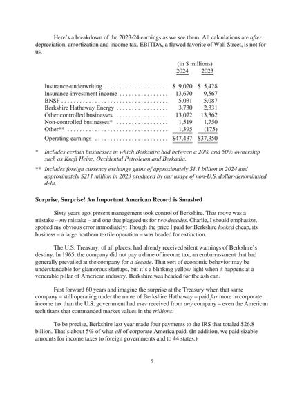
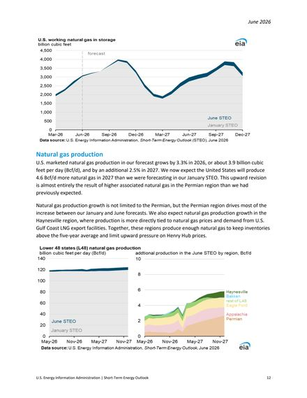
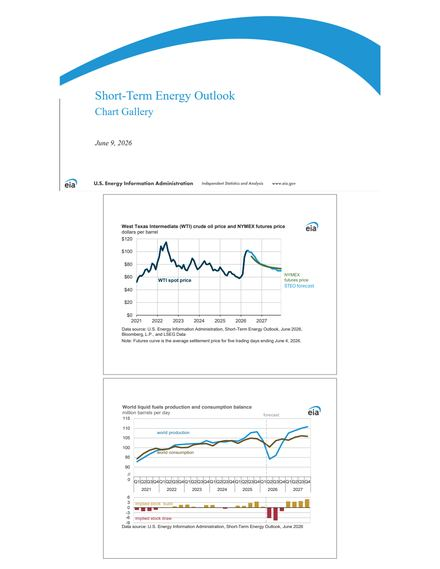
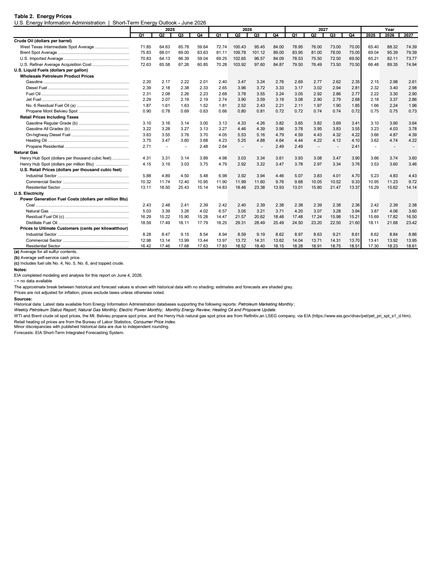

01 Live Demo
Running below on a free Hugging Face Space over a real 75-page corpus (Berkshire Hathaway 2024 shareholder letter + EIA Short-Term Energy Outlook). Ask a question — the app shows the answer with page citations and the actual retrieved page images.
Free-tier Space — first load may take ~30s to wake up. Open full-screen ↗
02 System Workflow
The full pipeline, end to end. A document flows down the diagram once at indexing time; at query time the question enters both retrieval lanes and the fused top-5 pages go to the vision model as images.
03 Engineering Report
The problem, the options weighed at each stage, and real output from every stage of the pipeline. Every number on this page is an actual captured artifact, reproducible from the repo — nothing is illustrative.
The problem
Financial documents are dominated by charts and tables. A text-only RAG pipeline OCRs the PDF, chunks the text, and destroys exactly the content the questions are about — a quarterly price table or a production-growth chart doesn't survive chunking. The goal: a QA system that retrieves document pages as images and answers while actually looking at them — under hard constraints: no local GPU and zero budget (every component free-tier or open-weights).
Design decisions — options considered vs. chosen
| Stage | Options considered | Chosen | Why |
|---|---|---|---|
| Page rendering | OCR + chunking; Unstructured.io; pypdfium2 page→PNG | pypdfium2 | Keeps visual layout; also extracts raw text for the second lane; zero cost |
| Visual retrieval | CLIP page embeddings (single vector); ColQwen2.5 late interaction (ColPali); caption-then-embed | ColQwen2.5 | Single-vector CLIP collapses a whole page into one point — late interaction keeps ~755 patch vectors per page, so a query token can match one table-cell region |
| Text retrieval | BM25; OpenAI embeddings (paid); BGE-small-en-v1.5 | BGE-small | Open weights, 384-d, runs on CPU; complements the visual lane on prose questions |
| Fusion | Score normalization + weighted sum; learned reranker; Reciprocal Rank Fusion (k=60) | RRF | MAX_SIM (~20–30) and cosine (~0.6–0.8) live on incomparable scales; RRF is scale-free and needs no training data |
| Vector DB | FAISS (no server, no payloads); pgvector; Qdrant | Qdrant | Native multivector MAX_SIM support + payload storage + free local Docker / 1 GB cloud tier |
| Generation | OCR text → text LLM; page images → VLM; Ollama qwen2.5-vl (local fallback) | Gemini 2.5 Flash (VLM) | The model answers from the rendered page, so table/chart questions work; free tier |
| Evaluation | Vibes; RAGAS; hit@k / MRR on gold pages + LLM-judge | Custom | Page-level gold labels make retrieval metrics exact; judging on a different model (Flash-Lite) reduces self-grading bias |
| GPU for indexing | Colab (session limits); Modal (credit card); Kaggle API kernels | Kaggle | Scriptable push/status/output CLI → fully automated remote embedding job |
Stage 1 — Ingestion (pypdfium2)
75 pages rendered to PNG (~990×1290 / 1020×1320 px) + raw text per page + metadata
(doc_name, page_number, page_id like
berkshire_2024_letter::p5).
Stage 2 — Dual indexing (ColQwen2.5 + BGE-small → Qdrant)
Embedded on a Kaggle P100 GPU kernel (fp16, batch size 1):
- Visual lane: 75 pages × 755 patch vectors × 128-d each (late-interaction multivector, Qdrant MAX_SIM comparator) — ~19 MB of fp16 artifacts shipped back instead of the 7.5 GB model.
- Text lane: 75 × 384-d BGE-small dense vectors (cosine).
- One sparse cover page produced NaN patch vectors from fp16 overflow — sanitized to zeros (a zero vector can never win MAX_SIM, so this is lossless for ranking).
Stage 3 — Hybrid retrieval (the money stage)
Query: "What were Berkshire's insurance-underwriting earnings in 2024, and how do they compare to 2023?" — gold page p5 (the earnings breakdown table).
| Rank | Visual lane (MAX_SIM) | Text lane (cosine) | RRF fused |
|---|---|---|---|
| 1 | p5 (29.47) ✓ | p4 (0.778) ✗ | p5 ✓ |
| 2 | p4 (25.42) | p5 (0.767) | p4 |
| 3 | p10 (23.07) | p10 (0.688) | p10 |
The text lane ranks the prose page p4 first — the extracted text of the table page scores lower than the surrounding narrative. The visual lane sees the table itself and ranks p5 first by a wide margin; fusion keeps it at rank 1.
The fusion insurance works in both directions. For "How much does the EIA expect US marketed natural gas production to grow in 2026?" (gold p13), the visual lane ranks a wrong chart page p25 first (24.21 vs 23.98 — nearly tied); the text lane ranks p13 first decisively (0.811 vs 0.756), and fusion restores p13 to rank 1. Neither lane alone gets both questions right — the hybrid gets both.


Stage 4 — VLM generation (page images → Gemini 2.5 Flash)
Top-5 fused page images go to the VLM with a citation-forcing prompt. Actual output:
"Berkshire's insurance-underwriting earnings in 2024 were $9,020 million. This is an increase compared to 2023, when they were $5,428 million [berkshire_2024_letter p.5]." — verbatim model output; both figures come from the table on p5, which a text-only pipeline never had intact
The model also declines correctly: asked for a number the retrieved pages don't contain, it answered "The provided document pages do not contain the forecast WTI spot price for Q2 2026" instead of hallucinating one — and that answer still scored faithfulness 5/5.
Stage 5 — Evaluation (10 gold-annotated questions, full corpus)
| Metric | Score |
|---|---|
| hit@1 | 0.80 |
| hit@5 | 0.90 |
| MRR | 0.83 |
| Faithfulness (LLM-judge, 1–5) | 5.0 |
| Relevance (LLM-judge, 1–5) | 5.0 |
Failure analysis — both hit@1 misses have the same shape: quarterly-statistics-table lookups (e.g. "WTI spot price for Q2 2026", gold p34 below right). The gold page is a wall of small numbers with almost no distinguishing text or visual structure; both lanes rank the WTI price chart page p17 (below left) above it. That's the known hard case for page-level retrieval — the fix is table-cell-level indexing (extract tables → index rows), the top roadmap item.


Per-question raw results: results/eval_results.json.
Stage 6 — Serving
FastAPI REST API + Streamlit chat UI (shows the retrieved page images alongside the answer) + Docker Compose locally; the public demo above runs as a Docker Space on Hugging Face.
04 Engineering Problems Actually Hit (and Fixed)
1 · 7.5 GB model vs. a throttled connection
ColQwen2.5 downloads kept stalling locally. Instead of fighting it, I inverted the architecture: run embedding where the model already is (a Kaggle GPU kernel) and ship back only ~19 MB of embedding artifacts. The model never needs to reach the serving machine.
2 · Kaggle API kernels always get a P100 (compute capability 6.0)
Current PyTorch wheels dropped Pascal support (CUDA error: no kernel image).
Fix: the kernel self-detects get_device_capability() < (7,0), installs
torch 2.5.1+cu121 + colpali-engine 0.3.9 + transformers<5, and re-execs itself. fp16
instead of bf16 (no bf16 on Pascal), batch size 1 (the fp16 model alone is 8.5 GB of the
16 GB card).
3 · fp16 overflow → NaN embeddings
1 of 75 pages produced NaN patch vectors; Qdrant rejects NaN. Diagnosed to a near-blank cover page, sanitized to zeros — harmless under MAX_SIM ranking.
4 · Free-tier quota engineering
Gemini free keys allow ~20 requests/day per model per project. The eval needs 20 calls (10 answers + 10 judgments) — split across two models (Flash generates, Flash-Lite judges, which independently reduces self-grading bias), with 429-aware retry/backoff and per-question progress checkpointing so a mid-run failure never loses completed work.
5 · Secrets never leave the machine
The Kaggle kernel does GPU-only work; all Gemini calls run locally, so no API key is ever bundled into an uploadable artifact.
What I'd build next
- Table-cell-level indexing to fix the dense-table hit@1 misses (the only failure mode found).
- Scale eval past 10 questions with synthetic QA generation + human spot-checks.
- Qdrant binary quantization for the multivectors (755 × 128 fp16 per page gets expensive at 10K+ pages).
- Swap the judge to a stronger paid model for calibration once budget allows.